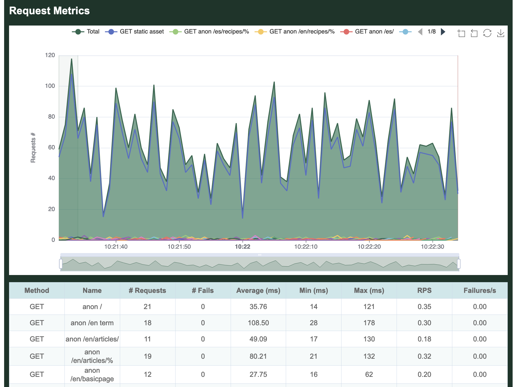
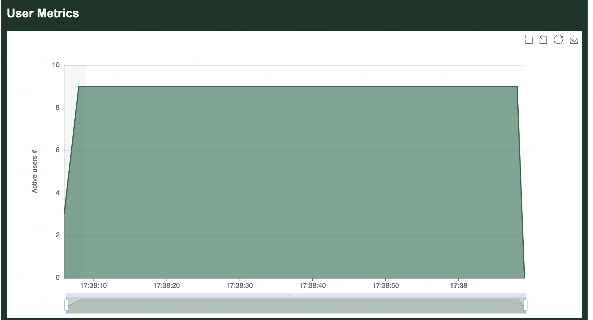

Metrics
Here's sample output generated when running a loadtest, in this case the Umami example that comes with Goose.
In this case, the Drupal Umami demo was installed in a local container. The following command was used to configure Goose and run the load test. The -u9 tells Goose to spin up 9 users. The -r3 option tells Goose to hatch 3 users per second. The -t1m option tells Goose to run the load test for 1 minute, or 60 seconds. The --no-reset-metrics flag tells Goose to include all metrics, instead of the default which is to flush all metrics collected during start up. And finally, the --report-file report.html tells Goose to generate an HTML-formatted report named report.html once the load test finishes.
% cargo run --release --example umami -- --host http://umami.ddev.site/ -u9 -r3 -t1m --no-reset-metrics --report-file report.html
Finished release [optimized] target(s) in 0.11s
Running `target/release/examples/umami --host 'http://umami.ddev.site/' -u9 -r3 -t1m --no-reset-metrics --report-file report.html`
08:21:31 [INFO] Output verbosity level: INFO
08:21:31 [INFO] Logfile verbosity level: WARN
08:21:31 [INFO] users = 9
08:21:31 [INFO] run_time = 60
08:21:31 [INFO] hatch_rate = 3
08:21:31 [INFO] no_reset_metrics = true
08:21:31 [INFO] report_file = report.html
08:21:31 [INFO] global host configured: http://umami.ddev.site/
08:21:31 [INFO] allocating transactions and scenarios with RoundRobin scheduler
08:21:31 [INFO] initializing 9 user states...
08:21:31 [INFO] Telnet controller listening on: 0.0.0.0:5116
08:21:31 [INFO] WebSocket controller listening on: 0.0.0.0:5117
08:21:31 [INFO] entering GooseAttack phase: Increase
08:21:31 [INFO] launching user 1 from Anonymous Spanish user...
08:21:31 [INFO] launching user 2 from Anonymous English user...
08:21:31 [INFO] launching user 3 from Anonymous Spanish user...
08:21:32 [INFO] launching user 4 from Anonymous English user...
08:21:32 [INFO] launching user 5 from Anonymous Spanish user...
08:21:32 [INFO] launching user 6 from Anonymous English user...
08:21:33 [INFO] launching user 7 from Admin user...
08:21:33 [INFO] launching user 8 from Anonymous Spanish user...
08:21:33 [INFO] launching user 9 from Anonymous English user...
All 9 users hatched.
08:21:34 [INFO] entering GooseAttack phase: Maintain
08:22:34 [INFO] entering GooseAttack phase: Decrease
08:22:34 [INFO] exiting user 4 from Anonymous English user...
08:22:34 [INFO] exiting user 7 from Admin user...
08:22:34 [INFO] exiting user 8 from Anonymous Spanish user...
08:22:34 [INFO] exiting user 3 from Anonymous Spanish user...
08:22:34 [INFO] exiting user 9 from Anonymous English user...
08:22:34 [INFO] exiting user 1 from Anonymous Spanish user...
08:22:34 [INFO] exiting user 2 from Anonymous English user...
08:22:34 [INFO] exiting user 6 from Anonymous English user...
08:22:34 [INFO] exiting user 5 from Anonymous Spanish user...
08:22:34 [INFO] wrote html report file to: report.html
08:22:34 [INFO] entering GooseAttack phase: Shutdown
08:22:34 [INFO] printing final metrics after 60 seconds...
=== PER TRANSACTION METRICS ===
------------------------------------------------------------------------------
Name | # times run | # fails | trans/s | fail/s
------------------------------------------------------------------------------
1: Anonymous English user |
1: anon / | 21 | 0 (0%) | 0.35 | 0.00
2: anon /en/basicpage | 12 | 0 (0%) | 0.20 | 0.00
3: anon /en/articles/ | 11 | 0 (0%) | 0.18 | 0.00
4: anon /en/articles/% | 19 | 0 (0%) | 0.32 | 0.00
5: anon /en/recipes/ | 11 | 0 (0%) | 0.18 | 0.00
6: anon /en/recipes/% | 35 | 0 (0%) | 0.58 | 0.00
7: anon /node/%nid | 11 | 0 (0%) | 0.18 | 0.00
8: anon /en term | 18 | 0 (0%) | 0.30 | 0.00
9: anon /en/search | 10 | 0 (0%) | 0.17 | 0.00
10: anon /en/contact | 9 | 0 (0%) | 0.15 | 0.00
2: Anonymous Spanish user |
1: anon /es/ | 24 | 0 (0%) | 0.40 | 0.00
2: anon /es/basicpage | 12 | 0 (0%) | 0.20 | 0.00
3: anon /es/articles/ | 12 | 0 (0%) | 0.20 | 0.00
4: anon /es/articles/% | 23 | 0 (0%) | 0.38 | 0.00
5: anon /es/recipes/ | 12 | 0 (0%) | 0.20 | 0.00
6: anon /es/recipes/% | 40 | 0 (0%) | 0.67 | 0.00
7: anon /es term | 21 | 0 (0%) | 0.35 | 0.00
8: anon /es/search | 11 | 0 (0%) | 0.18 | 0.00
9: anon /es/contact | 11 | 0 (0%) | 0.18 | 0.00
3: Admin user |
1: auth /en/user/login | 1 | 0 (0%) | 0.02 | 0.00
2: auth / | 4 | 0 (0%) | 0.07 | 0.00
3: auth /en/articles/ | 2 | 0 (0%) | 0.03 | 0.00
4: auth /en/node/%/e.. | 4 | 0 (0%) | 0.07 | 0.00
-------------------------+---------------+----------------+----------+--------
Aggregated | 334 | 0 (0%) | 5.57 | 0.00
------------------------------------------------------------------------------
Name | Avg (ms) | Min | Max | Median
------------------------------------------------------------------------------
1: Anonymous English user |
1: anon / | 117.38 | 88 | 199 | 110
2: anon /en/basicpage | 59.08 | 39 | 102 | 49
3: anon /en/articles/ | 129.82 | 92 | 216 | 110
4: anon /en/articles/% | 135.79 | 72 | 199 | 150
5: anon /en/recipes/ | 161.45 | 112 | 275 | 140
6: anon /en/recipes/% | 65.97 | 44 | 105 | 60
7: anon /node/%nid | 104.27 | 45 | 208 | 71
8: anon /en term | 146.72 | 70 | 221 | 140
9: anon /en/search | 241.40 | 194 | 292 | 230
10: anon /en/contact | 211.89 | 186 | 250 | 210
2: Anonymous Spanish user |
1: anon /es/ | 123.58 | 89 | 240 | 110
2: anon /es/basicpage | 59.58 | 45 | 85 | 58
3: anon /es/articles/ | 129.17 | 88 | 211 | 110
4: anon /es/articles/% | 151.26 | 71 | 262 | 160
5: anon /es/recipes/ | 158.83 | 107 | 222 | 150
6: anon /es/recipes/% | 59.42 | 47 | 89 | 53
7: anon /es term | 143.76 | 52 | 207 | 140
8: anon /es/search | 288.82 | 233 | 415 | 270
9: anon /es/contact | 233.91 | 192 | 291 | 230
3: Admin user |
1: auth /en/user/login | 316.00 | 316 | 316 | 316
2: auth / | 241.75 | 223 | 277 | 230
3: auth /en/articles/ | 235.50 | 221 | 250 | 221
4: auth /en/node/%/e.. | 807.25 | 695 | 877 | 695
-------------------------+-------------+------------+-------------+-----------
Aggregated | 138.09 | 39 | 877 | 110
=== PER REQUEST METRICS ===
------------------------------------------------------------------------------
Name | # reqs | # fails | req/s | fail/s
------------------------------------------------------------------------------
GET anon / | 21 | 0 (0%) | 0.35 | 0.00
GET anon /en term | 18 | 0 (0%) | 0.30 | 0.00
GET anon /en/articles/ | 11 | 0 (0%) | 0.18 | 0.00
GET anon /en/articles/% | 19 | 0 (0%) | 0.32 | 0.00
GET anon /en/basicpage | 12 | 0 (0%) | 0.20 | 0.00
GET anon /en/contact | 9 | 0 (0%) | 0.15 | 0.00
GET anon /en/recipes/ | 11 | 0 (0%) | 0.18 | 0.00
GET anon /en/recipes/% | 35 | 0 (0%) | 0.58 | 0.00
GET anon /en/search | 10 | 0 (0%) | 0.17 | 0.00
GET anon /es term | 21 | 0 (0%) | 0.35 | 0.00
GET anon /es/ | 24 | 0 (0%) | 0.40 | 0.00
GET anon /es/articles/ | 12 | 0 (0%) | 0.20 | 0.00
GET anon /es/articles/% | 23 | 0 (0%) | 0.38 | 0.00
GET anon /es/basicpage | 12 | 0 (0%) | 0.20 | 0.00
GET anon /es/contact | 11 | 0 (0%) | 0.18 | 0.00
GET anon /es/recipes/ | 12 | 0 (0%) | 0.20 | 0.00
GET anon /es/recipes/% | 40 | 0 (0%) | 0.67 | 0.00
GET anon /es/search | 11 | 0 (0%) | 0.18 | 0.00
GET anon /node/%nid | 11 | 0 (0%) | 0.18 | 0.00
GET auth / | 4 | 0 (0%) | 0.07 | 0.00
GET auth /en/articles/ | 2 | 0 (0%) | 0.03 | 0.00
GET auth /en/node/%/edit | 8 | 0 (0%) | 0.13 | 0.00
GET auth /en/user/login | 1 | 0 (0%) | 0.02 | 0.00
GET static asset | 3,574 | 0 (0%) | 59.57 | 0.00
POST anon /en/contact | 9 | 0 (0%) | 0.15 | 0.00
POST anon /en/search | 10 | 0 (0%) | 0.17 | 0.00
POST anon /es/contact | 11 | 0 (0%) | 0.18 | 0.00
POST anon /es/search | 11 | 0 (0%) | 0.18 | 0.00
POST auth /en/node/%/e.. | 4 | 0 (0%) | 0.07 | 0.00
POST auth /en/user/login | 1 | 0 (0%) | 0.02 | 0.00
-------------------------+---------------+----------------+----------+--------
Aggregated | 3,958 | 0 (0%) | 65.97 | 0.00
------------------------------------------------------------------------------
Name | Avg (ms) | Min | Max | Median
------------------------------------------------------------------------------
GET anon / | 35.76 | 14 | 121 | 18
GET anon /en term | 108.50 | 28 | 178 | 100
GET anon /en/articles/ | 49.09 | 17 | 130 | 24
GET anon /en/articles/% | 80.21 | 21 | 132 | 97
GET anon /en/basicpage | 27.75 | 16 | 62 | 19
GET anon /en/contact | 22.89 | 16 | 29 | 22
GET anon /en/recipes/ | 58.36 | 17 | 140 | 29
GET anon /en/recipes/% | 30.17 | 15 | 62 | 24
GET anon /en/search | 35.40 | 17 | 89 | 24
GET anon /es term | 107.71 | 17 | 168 | 98
GET anon /es/ | 40.04 | 17 | 148 | 22
GET anon /es/articles/ | 48.75 | 16 | 130 | 25
GET anon /es/articles/% | 94.43 | 21 | 184 | 100
GET anon /es/basicpage | 28.58 | 18 | 55 | 24
GET anon /es/contact | 22.55 | 16 | 47 | 19
GET anon /es/recipes/ | 53.92 | 16 | 123 | 27
GET anon /es/recipes/% | 23.30 | 17 | 47 | 19
GET anon /es/search | 68.64 | 18 | 114 | 70
GET anon /node/%nid | 56.73 | 17 | 140 | 23
GET auth / | 133.25 | 121 | 160 | 130
GET auth /en/articles/ | 134.50 | 120 | 149 | 120
GET auth /en/node/%/edit | 123.88 | 46 | 188 | 110
GET auth /en/user/login | 33.00 | 33 | 33 | 33
GET static asset | 4.91 | 2 | 26 | 5
POST anon /en/contact | 120.00 | 107 | 151 | 110
POST anon /en/search | 141.90 | 115 | 161 | 140
POST anon /es/contact | 144.18 | 106 | 205 | 140
POST anon /es/search | 159.36 | 116 | 228 | 160
POST auth /en/node/%/e.. | 308.25 | 291 | 345 | 300
POST auth /en/user/login | 169.00 | 169 | 169 | 169
-------------------------+-------------+------------+-------------+-----------
Aggregated | 11.00 | 2 | 345 | 5
------------------------------------------------------------------------------
Slowest page load within specified percentile of requests (in ms):
------------------------------------------------------------------------------
Name | 50% | 75% | 98% | 99% | 99.9% | 99.99%
------------------------------------------------------------------------------
GET anon / | 18 | 35 | 120 | 120 | 120 | 120
GET anon /en term | 100 | 130 | 178 | 178 | 178 | 178
GET anon /en/articles/ | 24 | 58 | 130 | 130 | 130 | 130
GET anon /en/articles/% | 97 | 100 | 130 | 130 | 130 | 130
GET anon /en/basicpage | 19 | 30 | 62 | 62 | 62 | 62
GET anon /en/contact | 22 | 28 | 29 | 29 | 29 | 29
GET anon /en/recipes/ | 29 | 93 | 140 | 140 | 140 | 140
GET anon /en/recipes/% | 24 | 37 | 61 | 62 | 62 | 62
GET anon /en/search | 24 | 33 | 89 | 89 | 89 | 89
GET anon /es term | 98 | 130 | 168 | 168 | 168 | 168
GET anon /es/ | 22 | 35 | 148 | 148 | 148 | 148
GET anon /es/articles/ | 25 | 51 | 130 | 130 | 130 | 130
GET anon /es/articles/% | 100 | 120 | 180 | 180 | 180 | 180
GET anon /es/basicpage | 24 | 30 | 55 | 55 | 55 | 55
GET anon /es/contact | 19 | 21 | 47 | 47 | 47 | 47
GET anon /es/recipes/ | 27 | 100 | 120 | 120 | 120 | 120
GET anon /es/recipes/% | 19 | 25 | 43 | 47 | 47 | 47
GET anon /es/search | 70 | 99 | 110 | 110 | 110 | 110
GET anon /node/%nid | 23 | 89 | 140 | 140 | 140 | 140
GET auth / | 130 | 130 | 160 | 160 | 160 | 160
GET auth /en/articles/ | 120 | 149 | 149 | 149 | 149 | 149
GET auth /en/node/%/edit | 110 | 170 | 188 | 188 | 188 | 188
GET auth /en/user/login | 33 | 33 | 33 | 33 | 33 | 33
GET static asset | 5 | 6 | 10 | 11 | 20 | 26
POST anon /en/contact | 110 | 130 | 150 | 150 | 150 | 150
POST anon /en/search | 140 | 160 | 160 | 160 | 160 | 160
POST anon /es/contact | 140 | 160 | 205 | 205 | 205 | 205
POST anon /es/search | 160 | 160 | 228 | 228 | 228 | 228
POST auth /en/node/%/e.. | 300 | 300 | 345 | 345 | 345 | 345
POST auth /en/user/login | 169 | 169 | 169 | 169 | 169 | 169
-------------------------+--------+--------+--------+--------+--------+-------
Aggregated | 5 | 6 | 120 | 140 | 230 | 345
------------------------------------------------------------------------------
Name | Status codes
------------------------------------------------------------------------------
GET anon / | 21 [200]
GET anon /en term | 18 [200]
GET anon /en/articles/ | 11 [200]
GET anon /en/articles/% | 19 [200]
GET anon /en/basicpage | 12 [200]
GET anon /en/contact | 9 [200]
GET anon /en/recipes/ | 11 [200]
GET anon /en/recipes/% | 35 [200]
GET anon /en/search | 10 [200]
GET anon /es term | 21 [200]
GET anon /es/ | 24 [200]
GET anon /es/articles/ | 12 [200]
GET anon /es/articles/% | 23 [200]
GET anon /es/basicpage | 12 [200]
GET anon /es/contact | 11 [200]
GET anon /es/recipes/ | 12 [200]
GET anon /es/recipes/% | 40 [200]
GET anon /es/search | 11 [200]
GET anon /node/%nid | 11 [200]
GET auth / | 4 [200]
GET auth /en/articles/ | 2 [200]
GET auth /en/node/%/edit | 8 [200]
GET auth /en/user/login | 1 [200]
GET static asset | 3,574 [200]
POST anon /en/contact | 9 [200]
POST anon /en/search | 10 [200]
POST anon /es/contact | 11 [200]
POST anon /es/search | 11 [200]
POST auth /en/node/%/e.. | 4 [200]
POST auth /en/user/login | 1 [200]
-------------------------+----------------------------------------------------
Aggregated | 3,958 [200]
=== OVERVIEW ===
------------------------------------------------------------------------------
Action Started Stopped Elapsed Users
------------------------------------------------------------------------------
Increasing: 2022-04-28 10:21:31 - 2022-04-28 10:21:34 (00:00:03, 0 -> 9)
Maintaining: 2022-04-28 10:21:34 - 2022-04-28 10:22:34 (00:01:00, 9)
Decreasing: 2022-04-28 10:22:34 - 2022-04-28 10:22:34 (00:00:00, 0 <- 9)
Target host: http://umami.ddev.site/
goose v0.16.0
------------------------------------------------------------------------------
In addition to the above metrics displayed on the CLI, we've also told Goose to create an HTML report. The report starts with a brief overview, offering the same information found in the text overview above:

Next the report includes a graph of all requests made during the duration of the load test. By default, the graph includes an aggregated average, as well as per-request details. It's possible to click on the request names at the top of the graph hide/show specific requests on the graphs. In this case, the graph shows that most requests made by the load test were for static assets.
Below the graph is a table that shows per-request details, only partially included in this screenshot: 
The next graph shows the response times measured for each request made. In the following graph, it's apparent that POST requests had the slowest responses, which is logical as they are not cached.
Again, below the graph is a table that shows per-request details:

All requests made by Goose are grouped inside Transactions. The next graph shows all Transactions made during the load test, where each Transaction is a collection of some of the above requests. For example, the Transaction named 0.0 anon / includes an anonymous (not-logged-in) request for the front page, as well as requests for all static assets found on the front page. It is also followed by a table, partially shown here:

Goose also records all status codes returned by the server, and displays them per-request. In our simple test, all we received were 200 OK responses:

The final graph shows how many users were running at the various stages of the load test. As configured, Goose quickly ramped up to 9 users, then sustained that level of traffic for a minute before shutting down: 
Additional details about how metrics are collected, stored, and displayed can be found in the developer documentation.